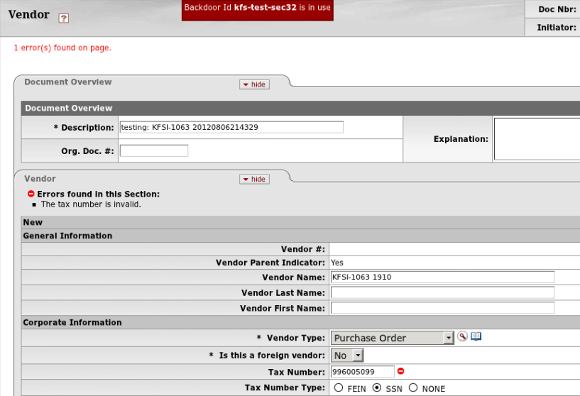
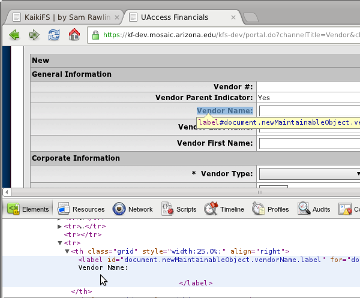
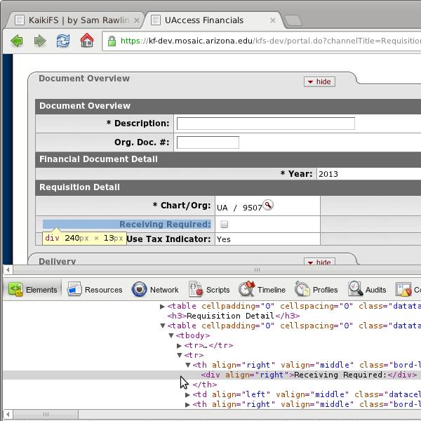
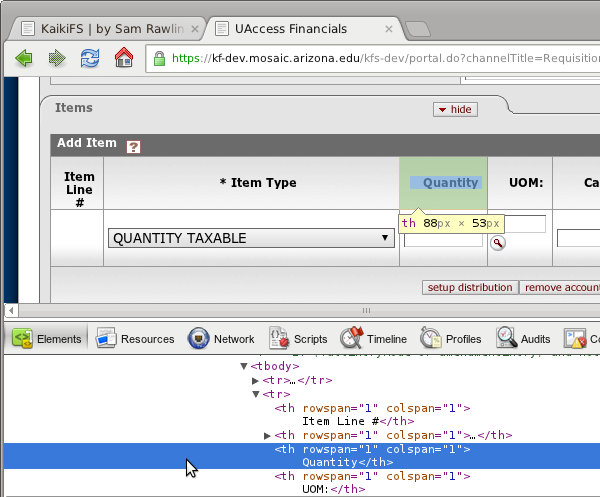
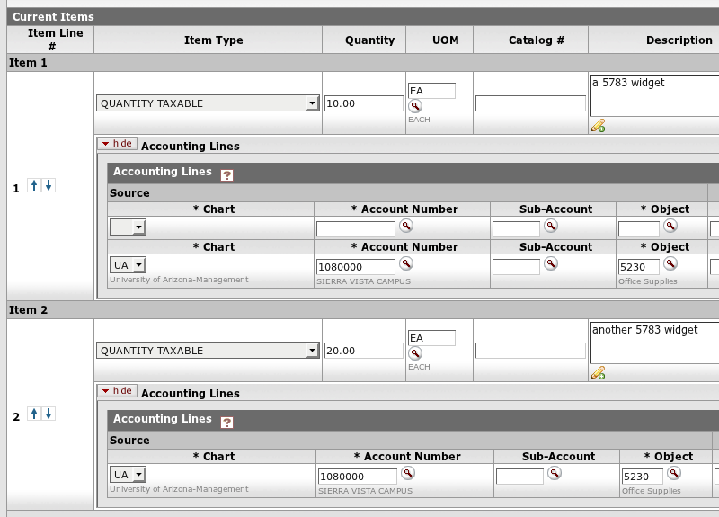

Show Me
What is Selenium?

“I thought Selenium was that cool browser plugin?”
NO*
* actually, yes
search google for kuali days
sam@mint6510:~$ irb -r selenium-webdriver
>> driver = Selenium::WebDriver.for :firefox
=> #<Selenium::WebDriver::Driver:0xad1c23c39ffdb20 browser=:firefox>
>> driver.navigate.to "http://www.google.com"
=> ""
>> driver.find_element(:css, "#gbqfq")
=> #<Selenium::WebDriver::Element:0x565d748bdaeb54c8...>
>> driver.find_element(:css, "#gbqfq").send_keys("kuali days 2012")
=> ""
>> driver.find_element(:css, "#gbqfb").click
=> "ok"
>> driver.find_element(:xpath, "//ol[@id='rso']/li//a").click
=> "ok"
>> driver.quit
search google for kuali days
sam@mint6510:~$ irb -r capybara -r capybara/dsl
>> include Capybara::DSL
=> Object
>> Capybara.run_server = false; Capybara.current_driver = :selenium
=> :selenium
>> visit "http://www.google.com/"
=> ""
>> fill_in("gbqfq", :with => "kuali days 2012")
=> ""
>> click_button("gbqfb")
=> "ok"
>> find(:xpath, "//ol[@id='rso']/li//a").click
=> "ok"
>> quit
Capybara::DSL
fill_in('First Name', :with => 'John')
check('A Checkbox')
select('Option', :from => 'Select Box')
page.has_selector?(:xpath, '//table/tr')
page.has_content?('foo')
page.should have_content('foo')
find(:xpath, "//table/tr").click
What is Cucumber?
small example
Feature: KFSI-5638
Background:
Given I am up top
@jira
Scenario: Searching under Asset Retirement Global doesn't blow up.
Given I am logged in
And I am on the "Central Admin" tab
When I click the "Asset Retirement Global" portal link
And I click "search"
Then I shouldn't see an incident report
And I shouldn't get an HTTP Status 500
Executable Specs
Given I am up top
Given /^I am up top$/ do
kaikifs.switch_to.default_content
endGiven I am logged in
Given /^I (?:am logged in|log in)$/ do
kaikifs.backdoor_as kaikifs.username
endAnd I am on the "Central Admin" tab
Given /^I am on the "([^"]*)" tab$/ do |tab|
kaikifs.switch_to.default_content
kaikifs.find_element(:link_text, tab).click
endExample Step Definitions
When I fill out a new Vendor Address with default values
When /^I fill out a new (?:Vendor Address|vendorAddress) with default values$/ do
prefix = "document.newMaintainableObject.add.vendorAddresses."
kaikifs.set_field(prefix+'vendorAddressTypeCode', 'PURCHASE ORDER')
kaikifs.set_field(prefix+'vendorLine1Address', '123 main St.')
kaikifs.set_field(prefix+'vendorCityName', 'Tucson')
kaikifs.set_field(prefix+'vendorStateCode', 'AZ')
kaikifs.set_field(prefix+'vendorZipCode', '85719')
kaikifs.set_field(prefix+'vendorCountryCode', 'UNITED STATES')
kaikifs.set_field(prefix+'vendorDefaultAddressIndicator', 'Yes')
endWhat is RSpec?
Behavior-Driven Development
Bowling Example
# bowling_spec.rb
require 'bowling'
describe Bowling, "#score" do
it "returns 0 for all gutter game" do
bowling = Bowling.new
20.times { bowling.hit(0) }
bowling.score.should eq(0)
end
end$ rspec bowling_spec.rb
./bowling_spec.rb:4:
uninitialized constant Bowling# bowling.rb
class Bowling
def hit(pins)
end
def score
0
end
end$ rspec bowling_spec.rb --format nested
Bowling#score
returns 0 for all gutter game
Finished in 0.007534 seconds
1 example, 0 failuresRSpec Matchers
actual.should == expected
actual.should be expected
actual.should =~ /expression/
actual.should be_an_instance_of expected
expect {...}.to raise_error(ErrorClass)
actual.should have_xxx(:arg)
actual.should include(expected)
What is so great about KaikiFS?
(“I like my Selenium IDE…”)
Record Video
Automatically screenshot point of failure

Log every click and attempt to find an element
Fill in fields by their “label”



Fill in fields by their position in a list
“first” Vendor Address
“second” Line Item

“Remember” information during the scenario
And I click "submit"
Then I should see "Document was successfully submitted."
When I record this document number
1232486
When I record this "Requisition #"
Requisition # = 60809
And I backdoor as "kfs-test-sec-2"
And I open my Action List, refreshing until that document appears
...
And I click "approve"
Then I should see my Action List
When I backdoor as "kfs-test-sec22"
And I open my Action List, refreshing until that document appears
And I open that document
And I click "approve"
Then I should see my Action List
When I backdoor as "kfs-test-sec40"
And I am on the "Main Menu" tab
And I click the "Contract Manager Assignment" portal link
And I fill out the following for that "Requisition #":
| Contract Manager | 10 |
And I click "submit"
Handle asynchronous activity
Highlight page elements during scenario
Speed up, slow down, pause scenarios
Integrate into your CI
a
Credit to
The Cucumber Book; Aslak Hellesøy;
impress.js;
Selenium; Capybara;